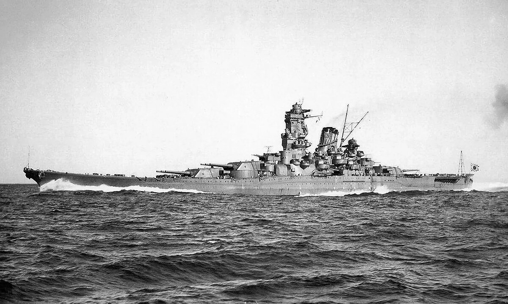

Superpancernik służący w Japońskiej Cesarskiej Marynarce Wojennej w okresie II wojny światowej, pierwszy okręt typu Yamato. Jego nazwa pochodziła od historycznej japońskiej prowincji Yamato. Yamato, wraz z bliźniaczym Musashi, były największymi pancernikami, jakie kiedykolwiek zbudowano, oba miały przy pełnym obciążeniu wyporność około 65 000 ton i miały artylerię główną w postaci dziewięciu dział kalibru 460 mm. Żaden z nich nie przetrwał wojny.
Pancerniki typu Yamato stworzono, aby przeciwstawić się przewadze liczebnej okrętów Marynarki Wojennej Stanów Zjednoczonych, głównego rywala Japonii na Pacyfiku. Stępkę pod Yamato położono w 1937, oficjalnie przyjęto go do służby w tydzień po ataku na Pearl Harbor, 16 grudnia 1941. W 1942 pełnił rolę okrętu flagowego Połączonej Floty, w czerwcu 1942 admirał Isoroku Yamamoto dowodził z jego pokładu zakończoną katastrofalną klęską Japonii bitwą pod Midway. Na początku 1943 rolę okrętu flagowego przejął od niego Musashi. Resztę tego, jak i większość 1944 roku, Yamato spędził przemieszczając się, w reakcji na zagrożenia ze strony sił amerykańskich, pomiędzy japońskimi bazami morskimi Truk i Kure. W czerwcu 1944 był obecny w czasie bitwy na Morzu Filipińskim, nie odegrał w niej jednak żadnej roli. Jedyną okazją, podczas której użył dział swojej artylerii głównej przeciw okrętom nawodnym przeciwnika, była stoczona w październiku 1944 bitwa w zatoce Leyte, podczas której Japończycy podjęli nieudaną próbę obrony Filipin przed amerykańską inwazją.
W 1944 równowaga sił morskich na Pacyfiku przechyliła się ostatecznie na niekorzyść Japonii, w początku 1945 flota japońska praktycznie już nie istniała, w dodatku jej i tak niewielkie możliwości ograniczały ciągłe braki paliwa. W kwietniu 1945, w desperackiej próbie spowolnienia postępów aliantów, Yamato wysłano na samobójczą misję na Okinawę, aby, walcząc aż do zniszczenia, bronił wyspy przed atakiem. Siły japońskie zostały dostrzeżone na południe od Kiusiu przez amerykańskie okręty podwodne i samoloty, 7 kwietnia Yamato został wraz z większością załogi zatopiony przez amerykańskie bombowce i samoloty torpedowe jako ostatni pancernik w historii zniszczony w walce.
| Klasa | Pancernik |
| Typ | Yamato |
| Wodowanie | 8.08.1941 |
| Zatopiony | 7.04.1945 |
| Długość | 263m |
| Szerokość | 38.9m |
| Wyporność | 63000t |